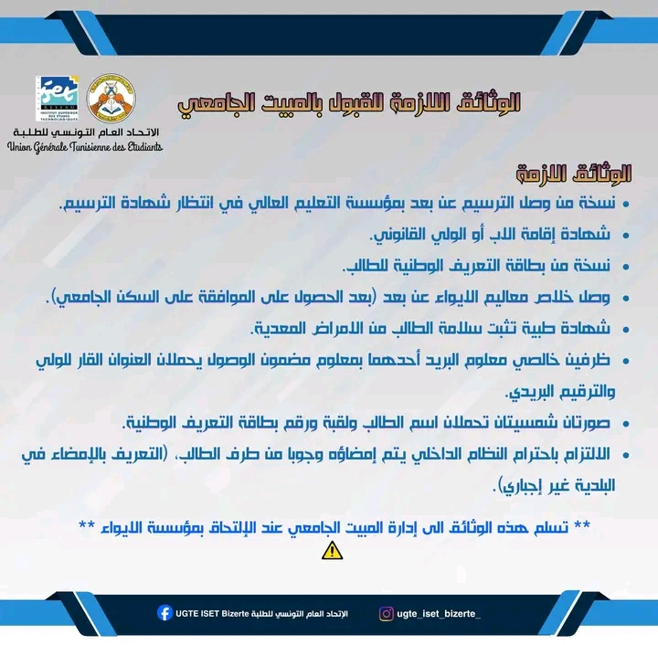
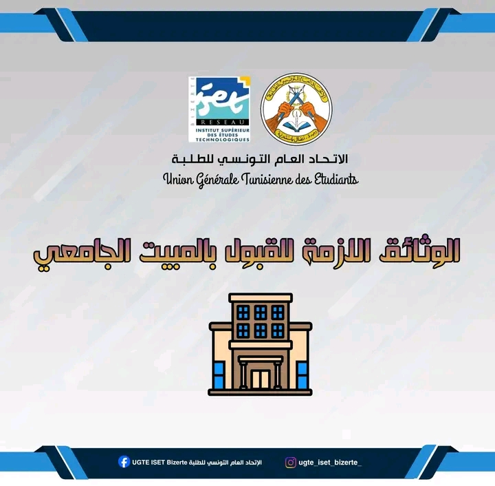

من إنشاء المطلب إلى الوثائق التي تحضرها بعد الحصول على الموافقة.
بالنسبة للإجراءات والمواعيد المتغيرة، تابع المنصة الرسمية والبلاغات الجديدة.
| منصة السكن | ooun.rnu.tn / étudiant ↗ |
| نقطة مهمة | راجع المعطيات قبل إرسال المطلب، خاصة بيانات الإقامة والولي. |
| المرجع | الإعلانات الرسمية لديوان الخدمات الجامعية للجهة المعنية. |
فيديو قصير يشرح خطوات تسجيل مطلب السكن الجامعي، منشور من UGTE ISET Bizerte.

